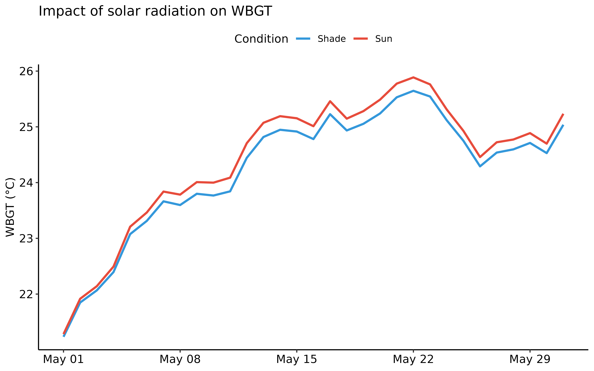
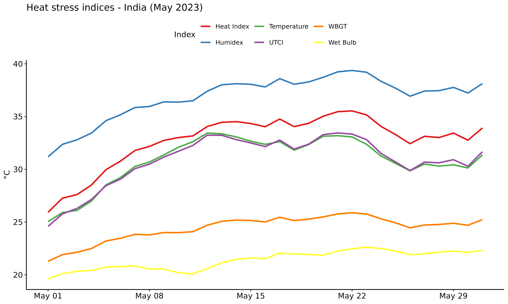
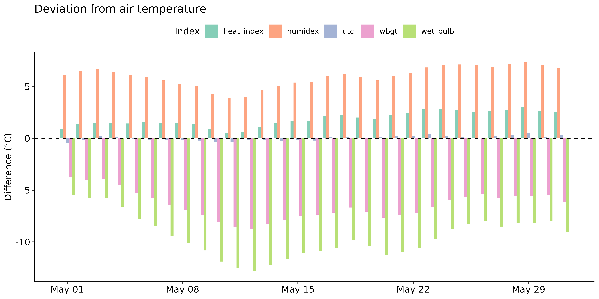
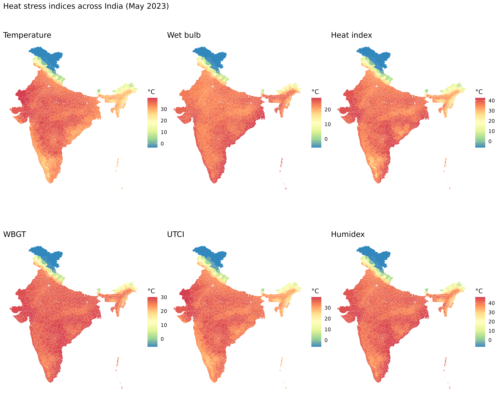
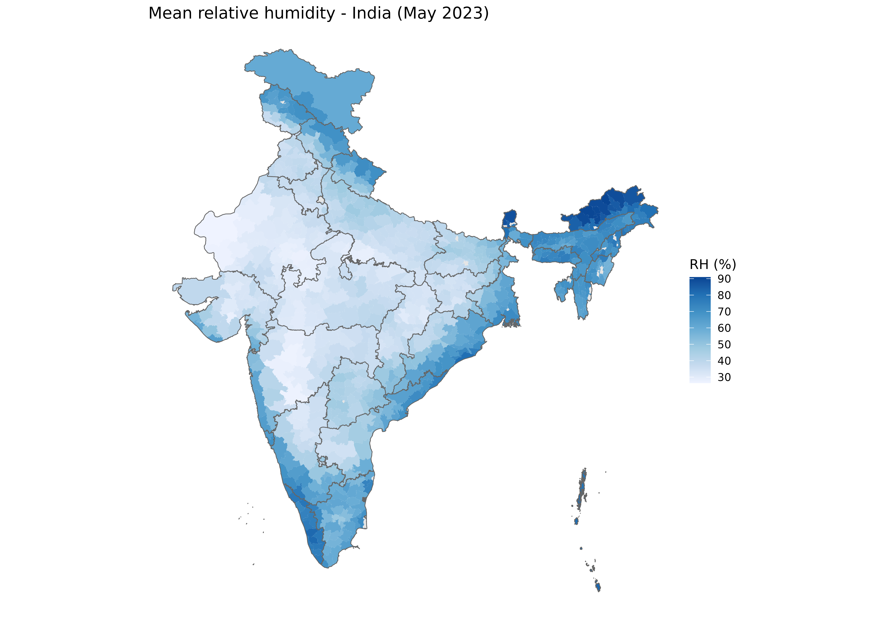
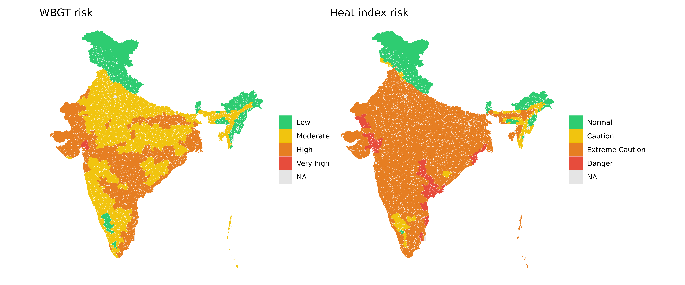
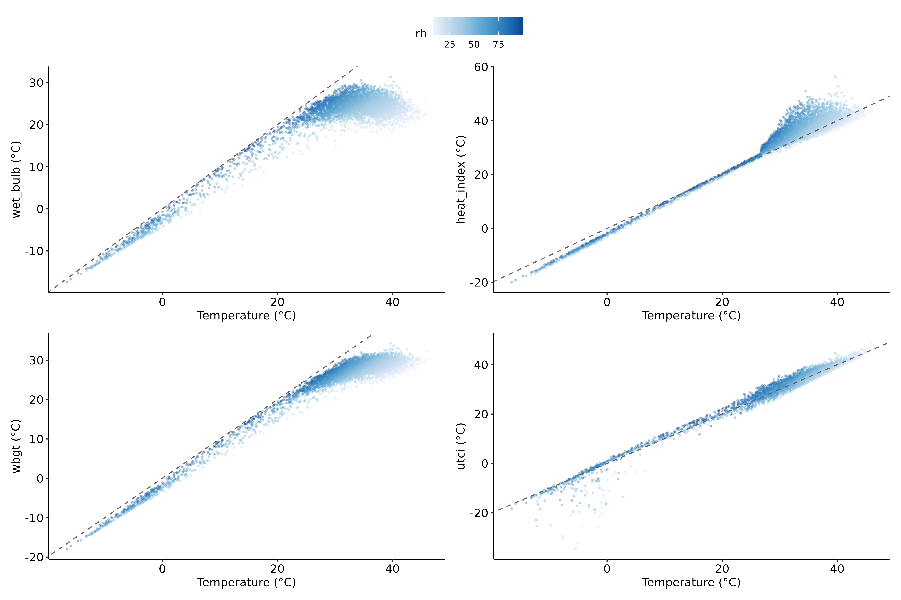
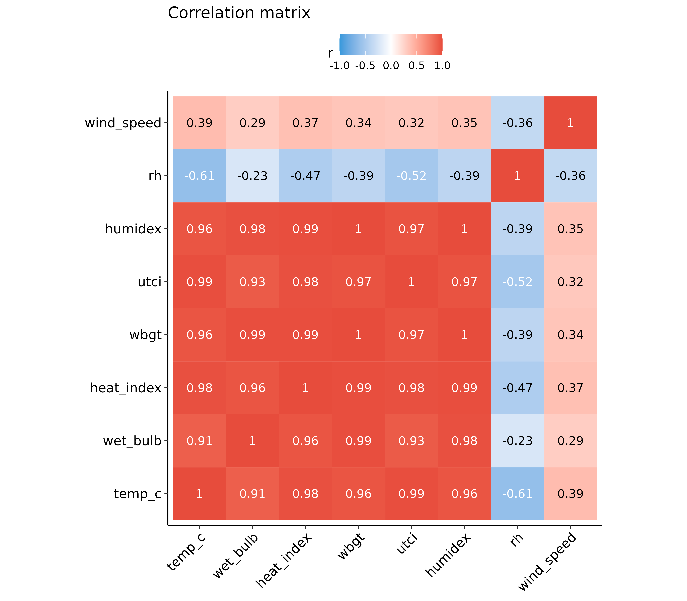

library(varunayan)
library(dplyr)
library(ggplot2)
library(sf)
library(lubridate)
library(tidyr)
library(patchwork)
library(ggpubr)
theme_set(theme_pubr(base_size = 11))Any study interested in assessing the impact of climate change on health outcomes would be interested in how excess heat affects human health. However, air temperature alone is not a sufficient metric to quantify heat stress, as humidity plays a crucial role in the body’s ability to cool itself through sweating.
In this vignette, we demonstrate how to calculate and compare different heat stress indices from ERA5 climate data. In particular, we compare the following indices:
- Air Temperature (T): Standard 2m temperature
- Wet Bulb Temperature (Tw): Temperature accounting for humidity (evaporative cooling)
- Heat Index (HI): Apparent temperature (how hot it “feels”)
- WBGT: Wet Bulb Globe Temperature (occupational heat stress standard)
- UTCI: Universal Thermal Climate Index (comprehensive thermal comfort)
- Humidex: Canadian heat discomfort index
Why multiple indices?
Air temperature alone doesn’t capture heat stress because humidity plays a critical role in the body’s ability to cool through sweating. Each index captures different aspects of thermal stress:
| Index | Purpose | Key Factors | Primary Use |
|---|---|---|---|
| Temperature | Actual air temperature | Dry bulb only | Baseline measurement |
| Wet Bulb | Evaporative cooling potential | T + Humidity | Physiological limit |
| Heat Index | Perceived temperature | T + RH (empirical) | Public weather alerts |
| WBGT | Occupational heat limits | Tw + T + Radiation | Workplace safety |
| UTCI | Comprehensive thermal comfort | T + Tmrt + Wind + Humidity | Climate research |
| Humidex | Comfort assessment | T + Dewpoint | Canadian weather |
Understanding the indexes
We will use the following nomenclature throughout this vignette:
| Symbol | Description | Unit |
|---|---|---|
| T, Ta | Air temperature (dry bulb) | °C |
| Td | Dewpoint temperature | °C |
| Tw, Tnwb | Wet bulb temperature (natural) | °C |
| Tg | Globe temperature | °C |
| Tmrt | Mean radiant temperature | °C |
| RH | Relative humidity | % |
| e | Vapor pressure | hPa |
| HI | Heat Index | °C |
| WBGT | Wet Bulb Globe Temperature | °C |
| UTCI | Universal Thermal Climate Index | °C |
Wet bulb temperature (Tw)
The wet bulb temperature represents the lowest temperature that can be achieved through evaporative cooling alone. It’s calculated using the Stull (2011) formula:
A wet bulb temperature of 35°C is considered the upper limit for human survivability, as the body cannot cool itself through sweating at this point (the air is so hot and humid that sweating no longer cools the body!).
Heat Index (HI)
The Heat Index uses the Rothfusz regression equation from the US National Weather Service:
Risk categories: - Normal (<27°C): No special precautions - Caution (27-32°C): Fatigue possible with prolonged exposure - Extreme Caution (32-41°C): Heat cramps and exhaustion possible - Danger (41-54°C): Heat exhaustion likely, heat stroke possible - Extreme Danger (>54°C): Heat stroke highly likely
WBGT (Wet Bulb Globe Temperature)
WBGT is the ISO 7243 standard for occupational heat stress:
Where is natural wet bulb, is globe temperature (accounting for radiation), and is air temperature.
Risk categories based on ISO 7243: - Low (<25°C): Safe for most activities - Moderate (25-28°C): Exercise caution - High (28-30°C): Reduce physical activity - Very High (30-32°C): Minimize outdoor work - Extreme (>32°C): Suspend heavy outdoor work
UTCI (Universal Thermal Climate Index)
UTCI is the most comprehensive thermal comfort index, based on a multi-node model of human thermoregulation (Bröde et al., 2012). We use the sparse regression approximation from Roman et al. (2025):
The UTCI considers: - Air temperature - Mean radiant temperature - Wind speed at 10m - Relative humidity
Thermal stress categories: - Extreme cold stress (<-40°C) - Very strong cold stress (-40 to -27°C) - Strong cold stress (-27 to -13°C) - Moderate cold stress (-13 to 0°C) - Slight cold stress (0 to 9°C) - No thermal stress (9 to 26°C) - Moderate heat Stress (26 to 32°C) - Strong heat stress (32 to 38°C) - Very strong heat stress (38 to 46°C) - Extreme heat stress (>46°C)
Calculating heat indices using ERA5 data
We have defined a helper function
GetERA5DailyHeatIndexData() which downloads temperature,
dewpoint, and wind data and calculates all heat stress indices in one
call.
states_url <- "https://bharatviz.saketlab.org/India_LGD_states.geojson"
states_file <- "indian_states.geojson"
if (!file.exists(states_file)) {
download.file(states_url, states_file, mode = "wb")
}
states_sf <- sf::st_read(states_file, quiet = TRUE)
heat_shade <- GetERA5DailyHeatIndexData(
request_id = "india_heat_may2023_shade",
start_date = "2023-05-01",
end_date = "2023-05-31",
json_file = states_file,
solar_load = FALSE
)
# | | | 0% | |= | 2% | |=== | 4% | |==== | 6% | |====== | 8% | |======= | 10% | |========== | 14% | |============= | 18% | |================= | 24% | |===================== | 30% | |======================= | 32% | |======================== | 34% | |========================== | 36% | |=========================== | 38% | |============================ | 40% | |============================== | 43% | |=============================== | 45% | |================================= | 47% | |================================== | 49% | |=================================== | 51% | |===================================== | 53% | |====================================== | 55% | |======================================== | 57% | |========================================= | 59% | |============================================= | 65% | |================================================ | 69% | |================================================== | 71% | |====================================================== | 77% | |========================================================== | 83% | |============================================================= | 87% | |============================================================== | 89% | |================================================================= | 93% | |======================================================================| 100%
# | | | 0% | |= | 2% | |=== | 4% | |==== | 6% | |======= | 10% | |======== | 12% | |========== | 14% | |=========== | 16% | |================= | 24% | |==================== | 28% | |=================================== | 50% | |======================================== | 58% | |==================================================== | 74% | |======================================================================| 100%
# | | | 0% | |== | 3% | |===== | 7% | |======== | 12% | |=========== | 16% | |================= | 25% | |======================== | 34% | |========================= | 35% | |============================== | 43% | |================================================ | 69% | |================================================== | 72% | |======================================================================| 100%
# | | | 0% | |== | 3% | |==== | 6% | |===== | 7% | |======= | 10% | |======== | 12% | |========== | 15% | |=========== | 16% | |============ | 18% | |================== | 26% | |==================== | 29% | |======================= | 34% | |======================== | 35% | |========================== | 36% | |============================ | 39% | |=============================== | 44% | |=============================================== | 67% | |================================================= | 70% | |================================================== | 71% | |===================================================== | 76% | |======================================================= | 79% | |======================================================================| 100%
heat_solar <- GetERA5DailyHeatIndexData(
request_id = "india_heat_may2023_solar",
start_date = "2023-05-01",
end_date = "2023-05-31",
json_file = states_file,
solar_load = TRUE
)
# | | | 0% | |= | 2% | |== | 3% | |==== | 5% | |======= | 10% | |======== | 12% | |=========== | 15% | |============ | 17% | |============= | 19% | |============== | 21% | |================ | 22% | |================= | 24% | |==================== | 29% | |======================= | 33% | |======================== | 34% | |========================= | 36% | |=========================== | 38% | |============================ | 40% | |=============================== | 45% | |================================= | 47% | |=================================== | 50% | |===================================== | 53% | |============================================= | 64% | |======================================================== | 79% | |=================================================================== | 95% | |==================================================================== | 97% | |======================================================================| 100%
head(heat_solar)
# date latitude longitude temp_c dewpoint_c rh wind_speed
# 1 2023-05-01 7.003 93.92789 29.49917 25.32015 78.28953 4.429024
# 2 2023-05-01 8.253 77.17731 26.75894 24.74203 88.72900 2.404126
# 3 2023-05-01 8.253 77.42732 27.29409 24.85336 86.55709 2.428025
# 4 2023-05-01 8.253 77.67733 27.54507 24.85238 85.28928 3.813376
# 5 2023-05-01 8.503 76.92730 26.62417 24.28500 87.02304 1.597042
# 6 2023-05-01 8.503 77.17731 26.16421 23.90609 87.40647 1.419242
# solar_radiation wet_bulb heat_index wbgt utci humidex wbgt_risk
# 1 147493.8 26.39243 35.74369 27.41648 30.10987 42.18977 Moderate
# 2 186597.8 25.24943 30.22752 25.73237 29.26413 38.81798 Moderate
# 3 239525.8 25.46756 31.26635 26.06151 29.65543 39.47322 Moderate
# 4 294949.8 25.53196 31.69988 26.19142 28.32418 39.72314 Moderate
# 5 121989.8 24.87850 27.61441 25.42696 29.78152 38.19779 Moderate
# 6 148901.8 24.48196 27.11847 25.00335 29.36105 37.34445 Moderate
# heat_index_risk utci_stress
# 1 Extreme Caution Moderate heat stress
# 2 Caution Moderate heat stress
# 3 Caution Moderate heat stress
# 4 Caution Moderate heat stress
# 5 Caution Moderate heat stress
# 6 Caution Moderate heat stressSolar load impact
When solar_load = TRUE, the function downloads solar
radiation data and uses it to calculate more accurate outdoor WBGT and
UTCI values. This accounts for the additional heat stress from direct
sunlight.
daily_mean <- function(df, condition) {
df %>%
group_by(date) %>%
summarise(WBGT = mean(wbgt), .groups = "drop") %>%
mutate(Condition = condition)
}
solar_compare <- bind_rows(daily_mean(heat_shade, "Shade"), daily_mean(heat_solar, "Sun"))
ggplot(solar_compare, aes(date, WBGT, color = Condition)) +
geom_line(linewidth = 1) +
scale_color_manual(values = c(Shade = "#3498DB", Sun = "#E74C3C")) +
labs(title = "Impact of solar radiation on WBGT", x = NULL, y = "WBGT (°C)")
The difference between sun and shade conditions shows the additional thermal stress from solar radiation exposure, which can add several degrees to WBGT.
Temporal analysis
For the remaining analyses, we use the solar-loaded data as it better represents outdoor conditions.
heat_data <- heat_solarWe can visualize the daily mean values of each heat stress index over the month:
index_cols <- c(
temp_c = "Temperature", wet_bulb = "Wet Bulb", heat_index = "Heat Index",
wbgt = "WBGT", utci = "UTCI", humidex = "Humidex"
)
daily_indices <- heat_data %>%
group_by(date) %>%
summarise(across(names(index_cols), mean, na.rm = TRUE), .groups = "drop") %>%
pivot_longer(-date, names_to = "Index", values_to = "value") %>%
mutate(Index = index_cols[Index])
ggplot(daily_indices, aes(date, value, color = Index)) +
geom_line(linewidth = 1) +
scale_color_brewer(palette = "Set1") +
labs(title = "Heat stress indices - India (May 2023)", x = NULL, y = "°C")
Index differences from air temperature
daily_diff <- heat_data %>%
mutate(across(c(wet_bulb, heat_index, wbgt, utci, humidex), ~ .x - temp_c)) %>%
group_by(date) %>%
summarise(across(c(wet_bulb, heat_index, wbgt, utci, humidex), mean, na.rm = TRUE), .groups = "drop") %>%
pivot_longer(-date, names_to = "Index", values_to = "diff")
ggplot(daily_diff, aes(date, diff, fill = Index)) +
geom_col(position = "dodge", alpha = 0.8) +
geom_hline(yintercept = 0, linetype = "dashed") +
scale_fill_brewer(palette = "Set2") +
labs(title = "Deviation from air temperature", x = NULL, y = "Difference (°C)")
We make the following observations:
- Wet Bulb is always cooler than air temperature (due to evaporative cooling)
- Heat Index and Humidex are warmer when humidity is high
- WBGT and UTCI show elevated values due to solar radiation
Spatial analysis
We can also visualize the spatial distribution of heat stress indices across India.
districts_url <- "http://bharatviz.saketlab.org/India_LGD_districts.geojson"
districts_file <- "indian_districts.geojson"
if (!file.exists(districts_file)) {
download.file(districts_url, districts_file, mode = "wb")
}
districts_sf <- sf::st_read(districts_file, quiet = TRUE)
heat_vars <- c("temp_c", "wet_bulb", "heat_index", "wbgt", "utci", "humidex", "rh")
monthly_heat <- heat_data %>%
group_by(longitude, latitude) %>%
summarise(across(all_of(heat_vars), mean, na.rm = TRUE), .groups = "drop") %>%
st_as_sf(coords = c("longitude", "latitude"), crs = 4326)
district_map <- districts_sf %>%
st_join(monthly_heat) %>%
group_by(district_name, state_name) %>%
summarise(across(all_of(heat_vars), mean, na.rm = TRUE), .groups = "drop")
heat_map <- function(var, title) {
ggplot(district_map) +
geom_sf(aes(fill = .data[[var]]), color = "white", linewidth = 0.05) +
scale_fill_distiller(palette = "Spectral", name = "°C", na.value = "grey90") +
labs(title = title) +
theme_void()
}
(heat_map("temp_c", "Temperature") | heat_map("wet_bulb", "Wet bulb") | heat_map("heat_index", "Heat index")) /
(heat_map("wbgt", "WBGT") | heat_map("utci", "UTCI") | heat_map("humidex", "Humidex")) +
plot_annotation(title = "Heat stress indices across India (May 2023)")
Relative humidity choropleth
ggplot() +
geom_sf(data = district_map, aes(fill = rh), color = NA) +
geom_sf(data = states_sf, fill = NA, color = "grey40", linewidth = 0.3) +
scale_fill_distiller(palette = "Blues", direction = 1, name = "RH (%)", na.value = "grey90") +
labs(title = "Mean relative humidity - India (May 2023)") +
theme_void()
Risk assessment
wbgt_levels <- c("Low", "Moderate", "High", "Very high", "Extreme")
hi_levels <- c("Normal", "Caution", "Extreme Caution", "Danger", "Extreme Danger")
district_map <- district_map %>%
mutate(
wbgt_risk = factor(wbgt_risk_category(wbgt), levels = wbgt_levels),
hi_risk = factor(heat_index_risk_category(heat_index), levels = hi_levels),
utci_stress = utci_category(utci)
)
risk_colors <- c(
Low = "#2ECC71", Moderate = "#F1C40F", High = "#E67E22",
`Very high` = "#E74C3C", Extreme = "#8E44AD"
)
hi_colors <- c(
Normal = "#2ECC71", Caution = "#F1C40F", `Extreme Caution` = "#E67E22",
Danger = "#E74C3C", `Extreme Danger` = "#8E44AD"
)
risk_map <- function(var, colors, title) {
ggplot(district_map) +
geom_sf(aes(fill = .data[[var]]), color = "white", linewidth = 0.05) +
scale_fill_manual(values = colors, na.value = "grey90", drop = TRUE) +
labs(title = title) +
theme_void() +
theme(legend.title = element_blank())
}
risk_map("wbgt_risk", risk_colors, "WBGT risk") |
risk_map("hi_risk", hi_colors, "Heat index risk")
Relationship between indices
We can also explore how the different heat stress indices relate to each other.
sample_data <- heat_data %>% sample_n(min(5000, n()))
scatter <- function(yvar) {
ggplot(sample_data, aes(temp_c, .data[[yvar]], color = rh)) +
geom_point(alpha = 0.3, size = 0.5) +
geom_abline(linetype = "dashed", color = "grey40") +
scale_color_distiller(palette = "Blues", direction = 1) +
labs(x = "Temperature (°C)", y = paste(yvar, "(°C)"))
}
(scatter("wet_bulb") | scatter("heat_index")) / (scatter("wbgt") | scatter("utci")) +
plot_layout(guides = "collect")
cor_matrix <- heat_data %>%
select(temp_c, wet_bulb, heat_index, wbgt, utci, humidex, rh, wind_speed) %>%
cor(use = "complete.obs") %>%
round(2)
cor_long <- as.data.frame(as.table(cor_matrix))
names(cor_long) <- c("x", "y", "r")
ggplot(cor_long, aes(x, y, fill = r)) +
geom_tile(color = "white") +
geom_text(aes(label = r, color = abs(r) > 0.5), size = 3.5, show.legend = FALSE) +
scale_fill_gradient2(low = "#3498DB", high = "#E74C3C", limits = c(-1, 1)) +
scale_color_manual(values = c("black", "white")) +
labs(title = "Correlation matrix", x = NULL, y = NULL) +
theme(axis.text.x = element_text(angle = 45, hjust = 1), panel.grid = element_blank()) +
coord_fixed()